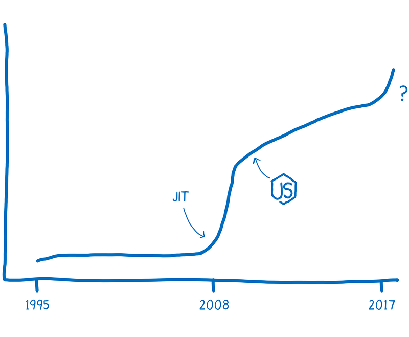
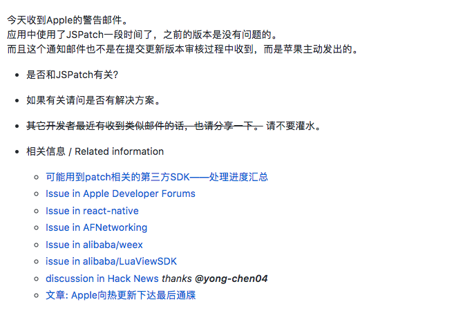

移动跨平台开发
REACT NATIVE
演示
JavaScript性能
引入JIT即时编译后, 性能大幅提升
命令式编程
......... => HOW
声明式编程
......... => WHAT
命令式
LinearLayout ll = new LinearLayout(this);
TextView tv = new TextView(this);
tv.setText("hello world");
ll.addView(tv, new LinearLayout.LayoutParams(
LinearLayout.LayoutParams.WRAP_CONTENT,
LinearLayout.LayoutParams.WRAP_CONTENT));
setContentView(ll);声明式
<LinearLayout
xmlns:android="http://schemas.android.com/apk/res/android"
android:layout_width="match_parent"
android:layout_height="match_parent"
<TextView>
android:layout_width="wrap_content"
android:layout_height="wrap_content"
android:text="hello world!" />
</LinearLayout>Hello World
声明式 Demo
界面随状态的变化而变化 => Android DataBinding
JS与Native交互原理简介
Android WebView
Java调JS
webview.loadUrl("javascript: alert('haha')");JS调Java
webview.addJavascriptInterface(new Object() {
@JavascriptInterface
void foo() {
Log.e("Demo", "foo");
}
}, "bridge");
webview.loadUrl("javascript: window.bridge.foo()");
// 链接跳转: shouldOverrideUrlLoading()
热更新
果爹发飙
结束